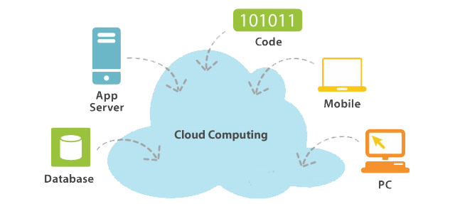
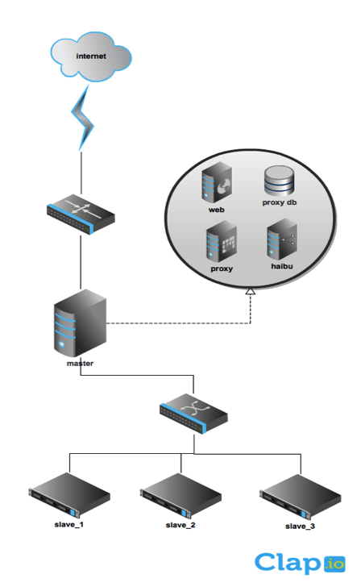
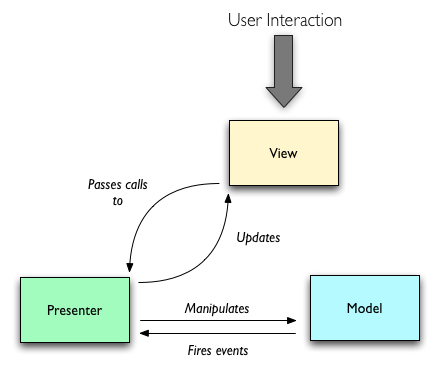
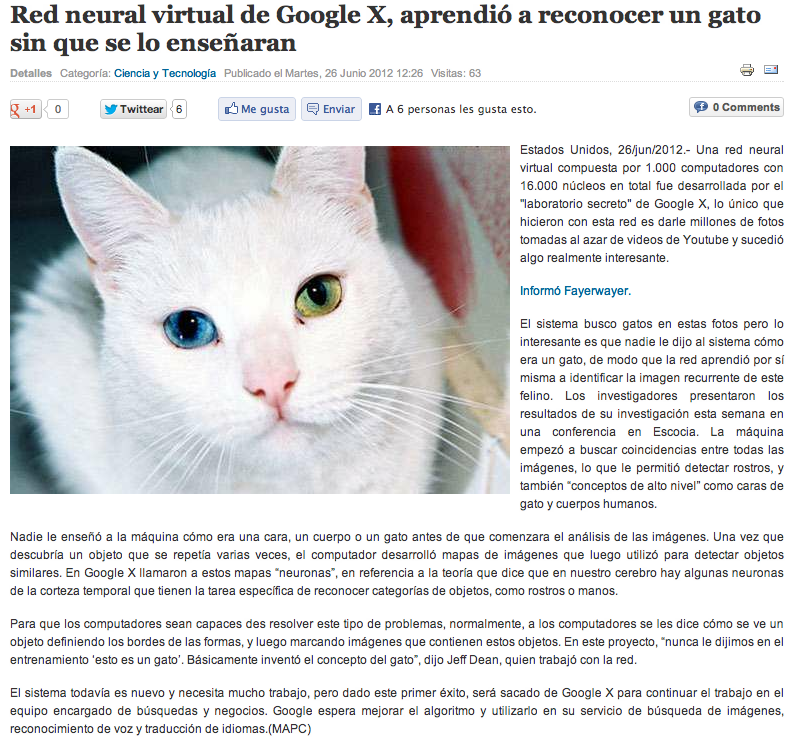

Implementación de un cluster para aplicaciones cloud
Juan Pablo Pinilla Ossa
Bryan Garzón Bahamón
Introducción
- ¿Que es cluster?
- HPC
- HA
- Load Balancing
- ¿Que es cloud computing?
- Ventajas
Cloud computing en la actualidad
Fuente: http://www.tecnoquo.com/wp-content/uploads/2011/04/amazon-cloud.jpg
{kind=link}
Problema
- Accesibilidad a los cluster
- Poder de computo que se pierde con el paso a cloud
- Por qué y para que cloud computing
¿Por qué usar cloud?
- Velocidades de conexion
- Cualquier persona puede ingresar
¿Cómo lo hicimos?
- Cluster
- Cloud
- PaaS
- ?
- Usuario
- PaaS?
- Ventajas
- Responsive
- Wireframes
- "Diseño"
- Frontend
- Backend
Que ofrecemos
-
Una plataforma HPC Cloud (High Performance Computing Cloud)
-
Ingresar desde donde sea (Ingresar desde cualquier lugar o cualquier tipo dispositivo).
-
Poder Ilimitado (Mayor velocidad de procesamiento, dependiendo del numero de maquinas).
-
Reducción de costos.
- "Just works"
¿Como funciona?
Componentes
-
haibu
Manejo de muchas aplicaciones nodejs en un solo servidor.
-
mdns
Multicast DNS es una forma facil de ayudar a los dispositivos de red a encontrar a cada dispositivo de la misma sin ninguna configuración
-
node-http-proxy
Despliegue de multiples servidores de aplicaciones http
Modelos
- MVP (front-end)
- Async programming (back-end)
MVP front-end
Fuente: http://blog.nodejitsu.com/scaling-isomorphic-javascript-code
Node.js

Plataforma creada con el motor de javascript de chrome. Para la creación fácil, rápida y escalable de aplicaciones web.
Prueba de Clap.io
repositorio en github
- https://github.com/gotik/clap.io-hello
Ventajas
- Accesibilidad
- Libre
- Mejoras en rendimiento.
- Mejoras en tiempo de ejecución.
- Facil de usar.
Posible uso
Bibliografia
- NoSQL, noSQL database [en línea], versión para nosqldatabase.com disponible en http://nosql-database.org
- Mongo DB, mongodb [en línea]. Versión para www.10gen.com. Disponible en http://www.10gen.com/what-is-mongodb
- DOWD Kevin y SEVERANCE Charles. (Julio 9 de 1997). High Performance Computing (RISC Architectures, Optimization Benchmarks).
- UERNA POIRIER Hector y RODRIGUEZ MARTIN Juan Francisco. (2009). Protocolos de red en montaje y configuración de una LAN [en linea]. Canarias, España: Versión para gobierno de Canarias.